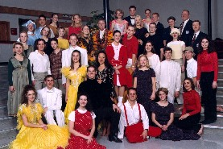

Extravadance |
|
 About Extravadance: They consist of 24-36 dancers from two different dance companies-- the Ballroom Dance Company and the Contemporary Dance Theatre. With the artistic director and spouse, tour manager and spouse, and possibly additional college administrators, there is generally a total of 28-42 people traveling. Members are selected by audition and represent some of the most outstanding dancers on campus. Each dancer brings many years of previous experience, and adheres to an ambitious weekly rehearsal and performance schedule.
Performance
Scheduling at Ricks College For additional information or to book Extravadance: |
About the Directors: Each dance company is directed by a member of the Ricks College's dance faculty. Shawn Fisher is the artistic director for the Ballroom Dance Company. Wendy Bone is the artistic director for the Contemporary Dance Theatre. Past and Present Performance Tours: 2000 Southeastern United
States About Tours: Tours for Extravadance are administered by Public Relations at Ricks College which is affiliated with The Church of Jesus Christ of Latter-day Saints. |